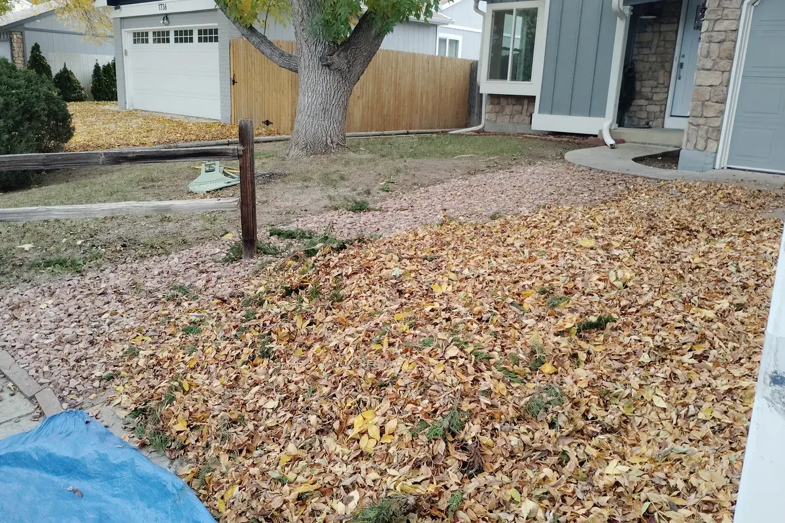
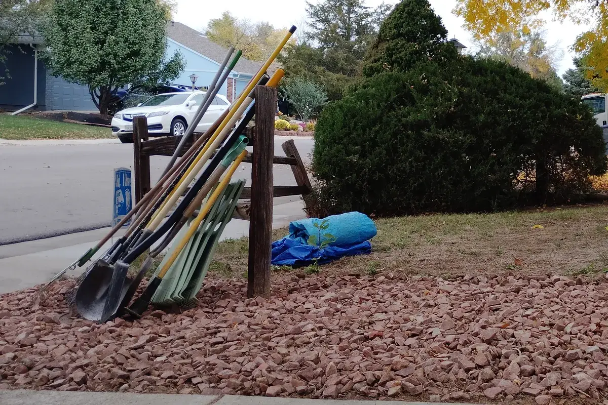
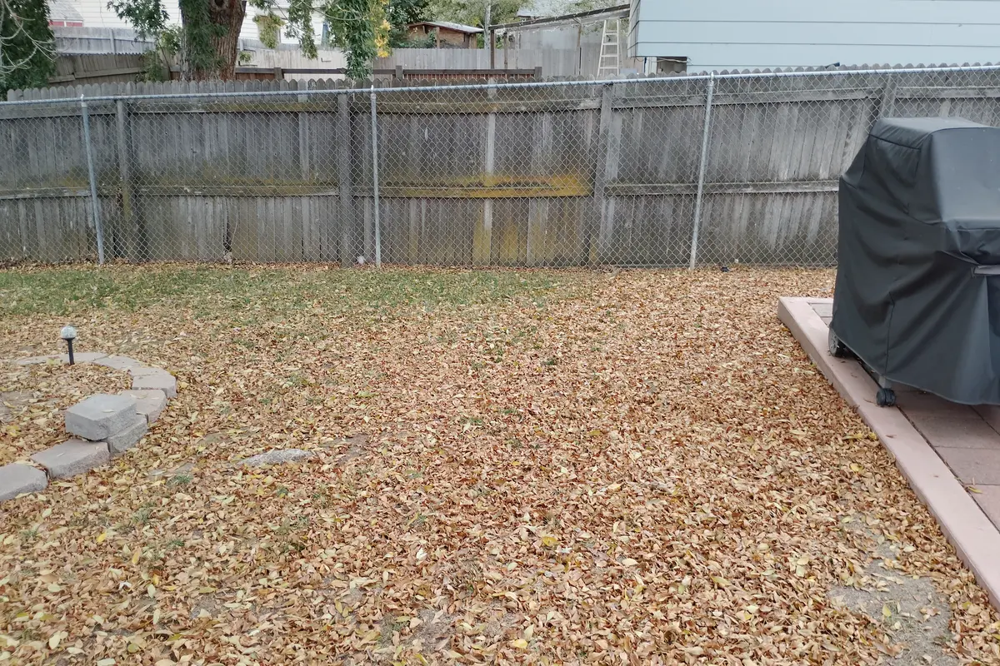
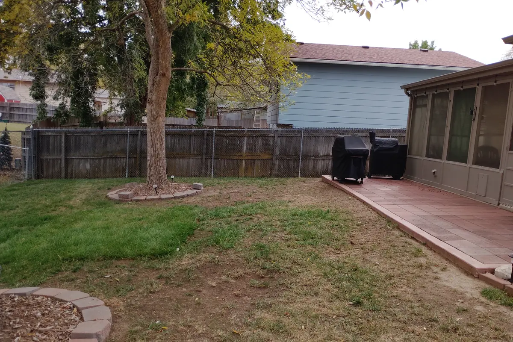
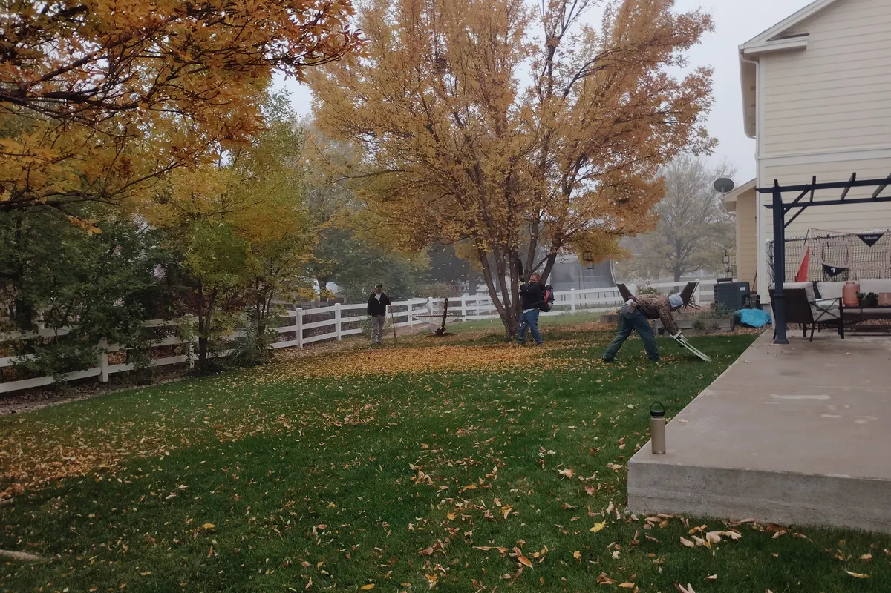
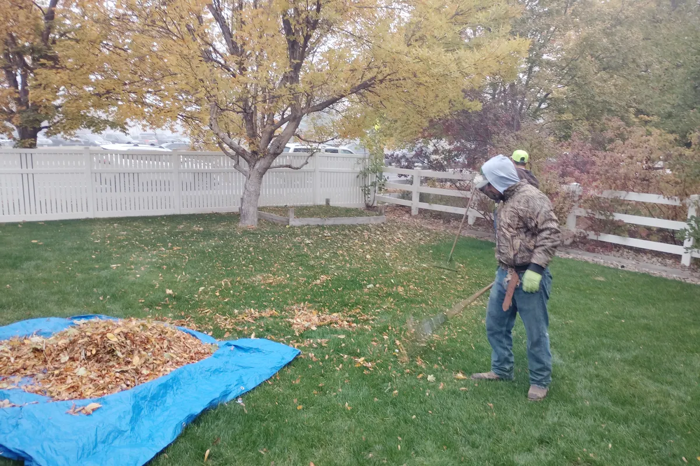
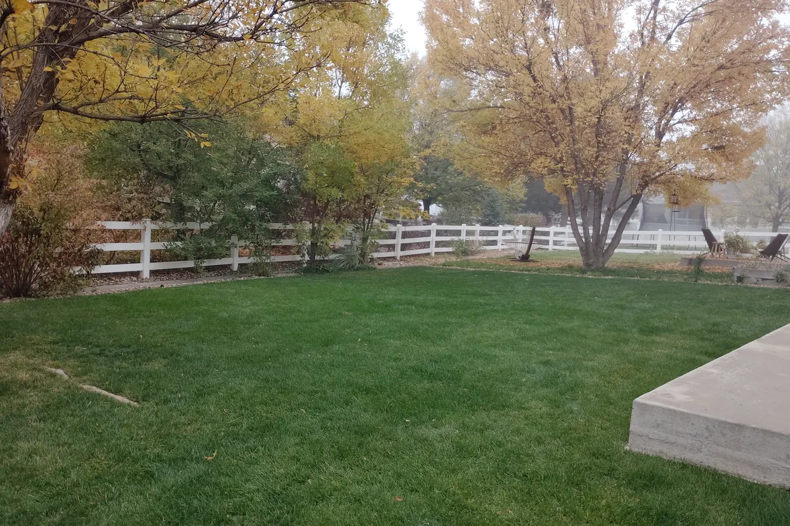
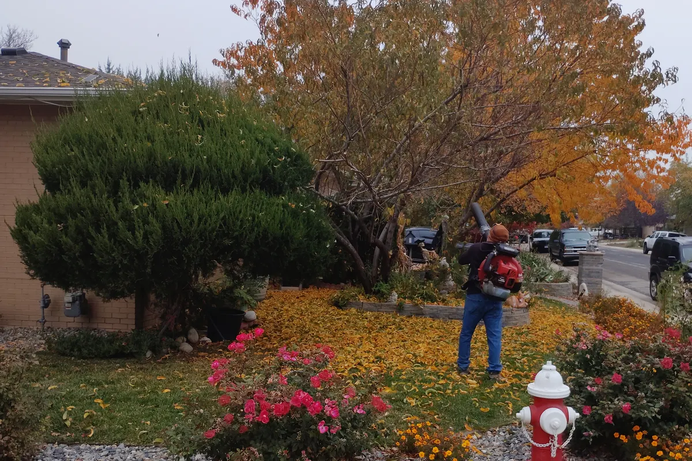
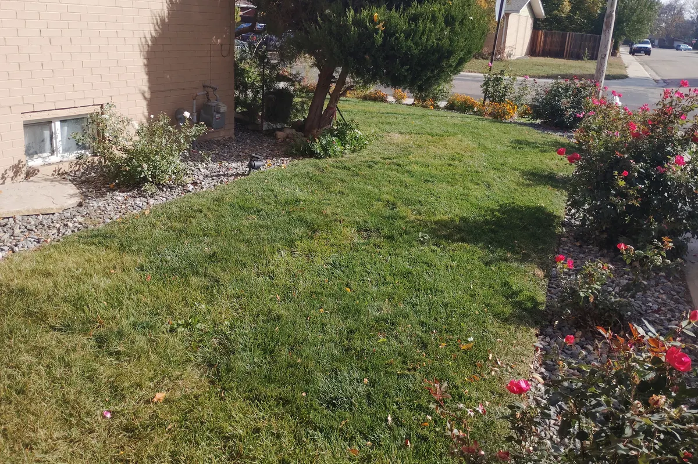
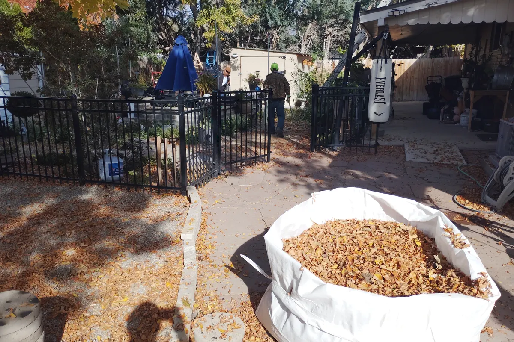

One crew, one visit: leaf cleanup and final mow, bed re-edging, aeration & overseeding, sprinkler blowouts, and gutter clearing. All the work that Colorado winters punish you for skipping, done while the weather still lets us.
Colorado’s first hard freeze usually lands by mid-October — and when it does, the sprinkler that never got blown out is the one that splits a backflow preventer, and the leaves still on the lawn are the smothered turf you’ll pay to reseed in spring. Aeration gets hurt most of all: once the ground sets up cold, seed misses its window and can’t take until May.
Every fall we watch someone’s “it can wait two weeks” turn into a plumbers-bill spring. One visit now is the cheap insurance version.
What a visit actually clears.
Leaves don’t blow off gravel mulch the way they blow across a lawn. They settle into the rock, mat down with the first rain, and the bed stops shedding water the way it should. This is a front bed at a northwest Longmont property on 22 October: leaves in, rakes and tarps out, load hauled off the same morning.

9:24 am — the front bed, leaves down over the gravel

10:33 am — same bed, cleared, tools packed
Raking rock is slower than blowing a lawn — it’s the part of a fall visit that has to be done by hand, and it’s the reason the bed reads as gravel again instead of a leaf pile with rock underneath.
Same day, a different yard on the south side of town, where the leaves came down on grass instead of rock.

1:11 pm — leaf load down the back lawn

1:58 pm — same fence line, leaves off
Under those leaves the turf was thinner than it looked — bare soil in patches, which is what the core aeration and overseeding in a Fall Reset is for. Getting the leaves off in October is what makes that visible while there’s still time to seed it.
Eight days after those two yards, in the fog: a corner lot that needed front and back done the same morning. The back was the work — three cottonwoods over a lawn, and leaves the wet had pinned down instead of letting them blow. Three passes, twenty-three minutes apart:

8:40 am — leaves down, crew starting

8:54 am — leaves raked back, one tarp nearly full

9:03 am — the same lawn, done
A wet leaf pile is several times heavier than the same pile dry, which is what a foggy morning makes obvious: nothing blows off, everything mats, and all of it has to be raked and carried. Filling that tarp is most of the visit. The front got the same morning — mown short, edges cleaned, leaves off the walk.
Same week, a corner lot: gravel beds and roses down both streets, a flagstone patio out back, and leaves that had filled all of it. Three hours, and the load left in a bulk bag.

9:53 am — the corner bed, leaves down over gravel and roses

10:53 am — the same corner, lawn and gravel clear

11:02 am — first bulk bag full, back patio still to sweep
Leaves on pavers are the part people forget: they hold moisture against the stone, go slick the first time it freezes, and a blower alone won't lift what the rain has pressed down. Bags out, patio swept, and the flagstone is a walkable surface again.
Pick your visit.
Season-ender packages for typical Longmont-area lots. Bigger lots, tall trees, or multi-level gutters are simply a slightly bigger quote — same crew. Every package starts with a free on-site walk-through, so the number you get is your yard’s number, not a flat guess.
The Fall Reset
For the yard that just needs to end the season right. Includes:
Full leaf cleanup, lawn and beds — bagged and hauled away
Final mow and crisp bed re-edging
Core aeration plus overseeding across the whole lawn
Add-ons either package: window-box and pot cleanout, fence & gate winter check with hardware tightening, mulch top-up — all priced as part of your free quote.
New this winter: snow shoveling pilot.
We’re trialing flat-rate residential snow shoveling for our maintenance clients this season — walkways and driveway edge-cleared within 24 hours of any 2 inch or more snowfall. We’re taking about 10 homes on the pilot this winter (crew capacity is real, we’re not a fleet), at a flat per-visit rate set when you sign up. If you want off the snow-shoveling list this winter, ask when you book and we’ll check the route before committing.
The look: We walk the property with you, confirm the package, and note anything special — drainage, sprinkler quirks, big bed loads.
The cleanup: Leaves and season’s debris out of lawn and beds, beds re-edged, final mow line set, perennials cut back.
The lawn: Core aeration passes over the whole lawn, seed spread same day so it sets with the next rain or snow.
The freeze-out: Sprinklers purged on the compressor until lines run dry, gutters cleared, hose bibs covered — and a two-minute winter checklist you can read later.
Fall-visit questions we get.
Does the estimate cost anything?
No — on-site estimates are free across Longmont and Boulder County, and your quote comes from what we see, not a formula read off your address.
Is my sprinkler safe after the freeze?
If the hard freeze already hit and the lines weren’t purged, we’ll check rather than assume — sometimes nothing split, sometimes a backflow did. Book the winterize and we’ll tell you straight what we find.
How long does a visit take?
Most Fall Reset visits run 2–4 hours on a typical lot; the Total Winterize adds the blowout and gutters within the same day so nobody takes off work twice.
What if I want the lawn-replacement rebate?
That’s a spring thing — Resource Central’s application windows open seasonally and we work the install side. See the xeriscaping page for how the rebate fits a conversion.
From cleanup to full seasons
Many cleanup clients move straight onto our weekly and monthly maintenance plans.